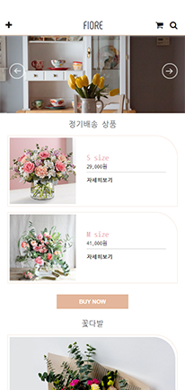
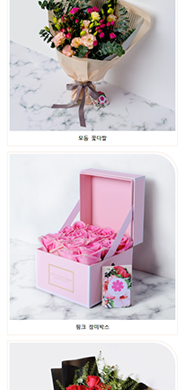
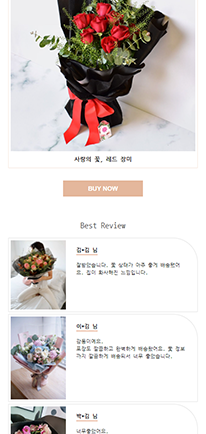
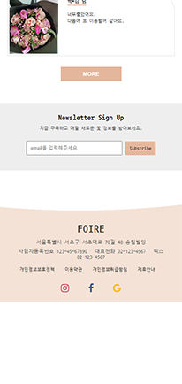
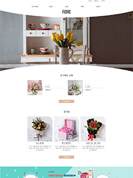
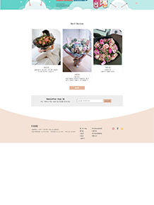

scroll



CONCEPT
꽃 정기구독 사이트 제작에 대한 의뢰를 받았다는 가정하에 진행한 프로젝트 입니다. 타사분석, 페르소나, 사용성테스트 등 전반적으로 기획부터 반응형 디자인과 웹표준을 준수한 코딩까지 모두 참여한 사이트 입니다. 모두 100%로 참여하였으며 기획 PPT도 제작했습니다.
제작기간 2개월(기획 + 디자인 + 코딩)
참여율 100%
언어 HTML / CSS / JavaScript / jQuery
TYPOGRAPHY
Phenomena
Aa Bb Cc Dd Ee Ff Gg Hh Ii Jj Kk Ll Mm Nn Oo Pp Qq Rr Ss Tt Uu Vv Ww Xx Yy ZzNanum Gothic Coding
가 나 다 라 마 바 사 아 자 차 카 차 파 하
COLOR
#edd0be
#ffffff
#e39a6f